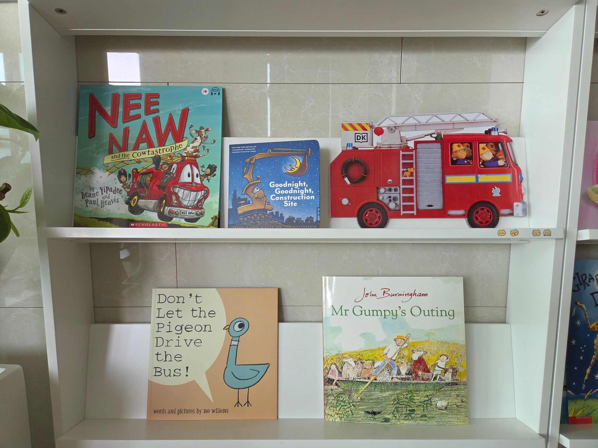

영어책 뭐부터 사야 할까요?
집에 있는 책별 나이테 120 활용법
"30개월인데 책 추천해 주세요"
안녕하세요, 영어책육아 메이트 나이테예요.
스터디방에 새로 오신 엄마들이
가장 많이 물어보시는 게 이거예요
"아이가 30개월인데 영어책 추천해 주세요"
"영어 전집은 뭐 사야 해요?"
저도 처음엔 똑같이 검색하고, 후기 보고, 또 검색하고…
그래서 나이테 120을 만들었어요 ^^
그런데 막상 "어떻게 쓰면 되는지"는
제대로 말씀드린 적이 없더라구요
그래서 오늘은
집에 있는 영어책별로 나이테 120을 활용하는 방법을 정리해 봤어요
나이테 120은 이렇게 생겼어요
| 항목 | 내용 |
|---|---|
| 구성 | 24가지 주제 × 5가지 유형 = 120권 |
| 유형 | 조작북 · 반복/패턴 · 라임/운율 · 유머/반전 · 스토리 |
| 대상 | 0개월~9세, 엄마가 읽어주는 영어 그림책 |
| 읽는 법 | 한 달에 한 주제씩, 2년 로드맵 |
책은 이런 근거를 함께 살펴보고 골랐어요
- 🏅 칼데콧·가이젤 등 수상작 18권
- 🇰🇷 국내 서점에서 인기 있는 책 41권
- 🌍 세계적으로 많이 읽히는 책 37권
- 📚 국내 도서관에서 많이 빌려 보는 책 10권
여기에 주제와 유형을 맞추고
조작북은 국내에서 새 책으로 쉽게 살 수 있는 것으로 골랐어요
레벨 순서가 아니라 재미 순서예요
순서대로 다 끝내야 하는 진도표도 아니고요 ^^
영어책이 집에 하나도 없다면
"영어책, 뭐부터 시작해야 돼요?"
이런 분들께는 딱 하나만 말씀드려요
알아보지 말고, 나이테 120을 그대로 따라오세요
매달 스터디 책 5권만 구해서 따라오다 보면
웬만한 유명한 원서들을 골고루 만나게 돼요
뭘 살지 고민하는 시간에
한 권이라도 더 읽어주는 게 훨씬 남는 장사예요 ㅎㅎ
도서관에서 빌려도 되고, 1권만 있어도 시작할 수 있어요
영어 전집이 한 질 있다면
잉글리시에그, 월드패밀리 같은
영어 전집을 한 질 들이신 집도 많죠
전집과 원서는 다른 거라서
별개로 가져가시는 걸 추천해요
| 영어 전집 | 영어 원서(그림책) | |
|---|---|---|
| 만든 목적 | 아이가 영어를 배우게 하려고 | 영어로 쓴 문학 작품 |
| 표현 | 빠르게 흡수하고 말하게 하려고 표현이 한정적이에요 | 세계적인 작가들의 고급스러운 표현 그대로 |
| 쌓이는 것 | 따라 말하기·발화 | 풍부한 인풋 · 영어 문해력 |
전집은 아이가 영어를 배우도록 만든 책이에요
최대한 빠르게 흡수해서 그 말을 입으로 하게 하는 게 목적이라
표현이 어느 정도 한정되어 있어요
원서는 달라요
영어로 문학 작품을 만나는 거예요
세계적으로 유명한 작가들의 고급스러운 표현을
그대로 접하면서 인풋을 쌓고
그러면서 영어 문해력도 키울 수 있어요
그래서 둘은 서로를 대신하지 않아요
- 전집은 지금 하던 대로 그대로
- 거기에 나이테 120을 따라 원서를 더하기
전집을 다 끝내고 원서로 넘어가야 하는 게 아니에요
둘 다 같이 가도 괜찮아요 ^^
이미 영어책이 많다면
집에 영어책이 이미 많은 집이라면
읽던 책은 그대로 읽으면서
매달 5권을 전면책장에 올려 두세요
그리고 "이번 달엔 이 5권은 꼭 한 번씩 읽어준다"
이 정도 마음이면 충분해요
아이가 늘 고르는 책만 보게 되기 쉬운데
매달 새 책 5권이 눈앞에 바뀌어 있으면
자연스럽게 다양한 책을 만나게 돼요
저희 집은 이렇게 해요
저희 집은 원래 보던 ORT를
매일 자기 전에 읽어주고 있어요
여기에 전면책장의 5권을 매달 바꿔 주면서
"이번 달은 이 5권은 꼭 읽어주겠다"는 마음으로
한 번씩은 꼭 읽어줘요

Fire Engine · Nee Naw and the Cowtastrophe
Goodnight, Goodnight, Construction Site
Don't Let the Pigeon Drive the Bus! · Mr Gumpy's Outing
이렇게 하니 익숙한 책은 익숙한 대로
새로운 책도 골고루 보여줄 수 있어서
정말 만족하고 있어요 ^^
한눈에 정리
| 우리 집은 | 이렇게 |
|---|---|
| 영어책이 하나도 없어요 | 알아보지 말고 나이테 120 그대로 따라오기 |
| 영어 전집이 한 질 있어요 | 전집은 그대로 + 나이테 120 원서 더하기 |
| 영어책이 이미 많아요 | 읽던 책 그대로 + 매달 5권 전면책장에 |